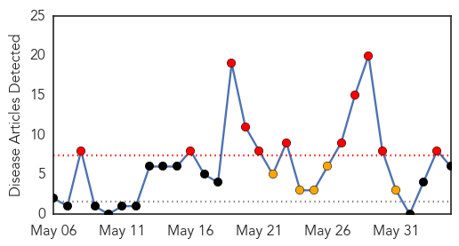
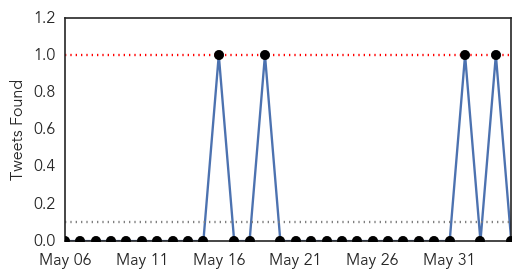
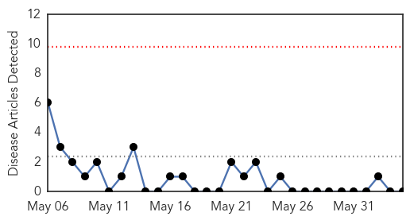

Cholera
30-Day Web Trend
11 alerts, 5 warnings

30-Day Twitter Trend
0 alerts, 0 warnings

Article Locations
Article Confidences

Top Articles:
Top Tweets:
- 0.648
- Cholera experts call for better reporting and surveilance of cholera on the blog: http://t.co/uGCHTGPQeY
Mumps
30-Day Web Trend
0 alerts, 0 warnings

30-Day Twitter Trend
0 alerts, 0 warnings

Article Locations

Article Confidences

Top Articles:
-
No articles found for Jun 04, 2014
Top Tweets:
-
No tweets found for Jun 04, 2014